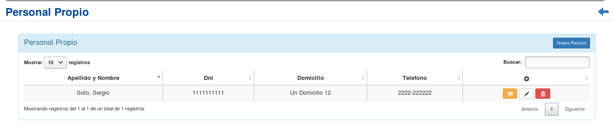
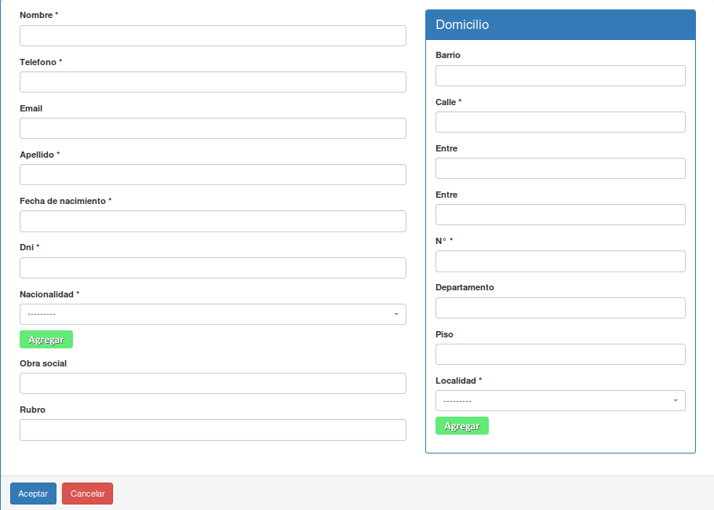
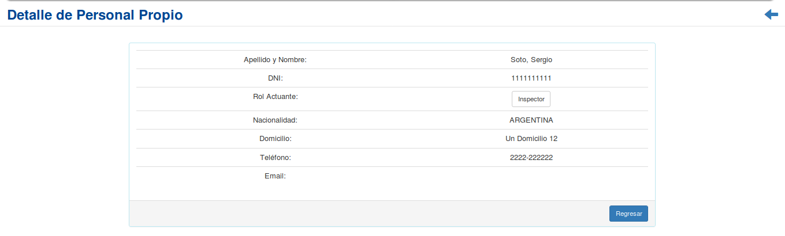
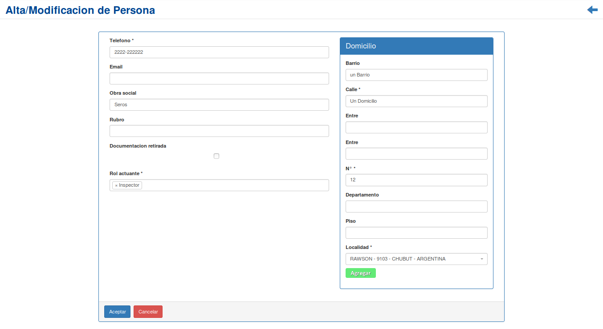
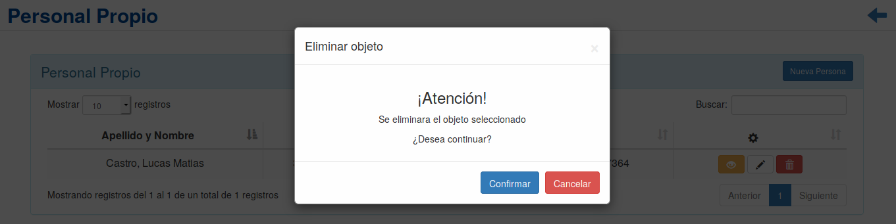

Personal Propio¶
Se presentará una pantalla que contendrá un listado con todos el Personal Propio que se encuentren registrados en el sistema hasta la fecha.
Junto con el listado, se presentarán un conjunto de funcionalidades que permitirán manipular cada Persona.
Estas funcionalidades son:
Además, si el usuario desea Registrar una nueva Persona:
Nueva Persona¶
Si el usuario desea crear una nueva Persona, deberá presionar el botón
Nueva Persona.A continuación el sistema lo redirigirá a la siguiente pantalla:
En esta parte el usuario se le presentará un formulario y deberá ingresar los datos solicitados para dar de alta una nueva Persona.
Atención
Se puede observar un botón verde con la leyenda
Agregaren el campo Nacionalidad, así como en la sección domicilio en el campo Localidad, el cual es utilizado para agregar una nueva nacionalidad o localidad respectivamente si no se encuentran registradas en el sistema. Además; El sistema siempre validará que la información ingresada sea correcta. En caso de que los datos ingresados sean incorrectos el sistema lo informará. En este punto, las posibles causas de errores son:
- Uno o más campos obligatorios vacíos.
- Uno o más campos con un formato incorrecto.
Una vez completado el formulario, se volverá a la pantalla que contendrá el listado de personas.
Detalle de Persona¶
Si el usuario desea ver el detalle de una Persona, deberá seleccionar en la columna de acciones asociado a la Persona y presionar el ícono
DetalleUna vez realizado el paso anterior aparecerá la siguiente vista emergente:
En esta parte el usuario podrá observar la información adicional de la Persona. Si desea volver al listado inicial, presionará el botón
Regresar.
Modificar Persona¶
Si el usuario desea modificar los datos de una Persona, deberá seleccionar en la columna de acciones asociado a la Persona y presionar el ícono
Modificar.Una vez realizado el paso anterior, el sistema lo redirigirá a la siguiente pantalla:
En esta parte al usuario se le presentará un formulario y deberá actualizar los datos asociados a la Persona.
Atención
Se puede observar al igual que en la sección Nueva Persona, un botón verde con la leyenda
Agregaren el campo Localidad, en el formulario del domicilio, el cual es utilizado para agregar una nueva localidad si no se encuentran registrada en el sistema. Además; El sistema siempre validará que la información ingresada sea correcta. En caso de que los datos ingresados sean incorrectos el sistema lo informará. En este punto, las posibles causas de errores son:
- Uno o más campos obligatorios vacíos.
- Uno o más campos con un formato incorrecto.
Una vez completado el formulario, el usuario deberá presionar el botón
Aceptary el sistema se encargará de actualizar los datos de la Persona seleccionada.
Eliminar Persona¶
Si el usuario desea eliminar una Persona, deberá seleccionar en la columna de acciones asociado a la Persona y presionar el ícono
EliminarUna vez realizado el paso anterior aparecerá la siguiente ventana emergente (modal):
En esta parte el usuario deberá decidir si confirma la eliminación de la Persona o no. Si desea confirmar la eliminación deberá presionar el botón
Confirmar, caso contrario, presionará el botónCancelar.